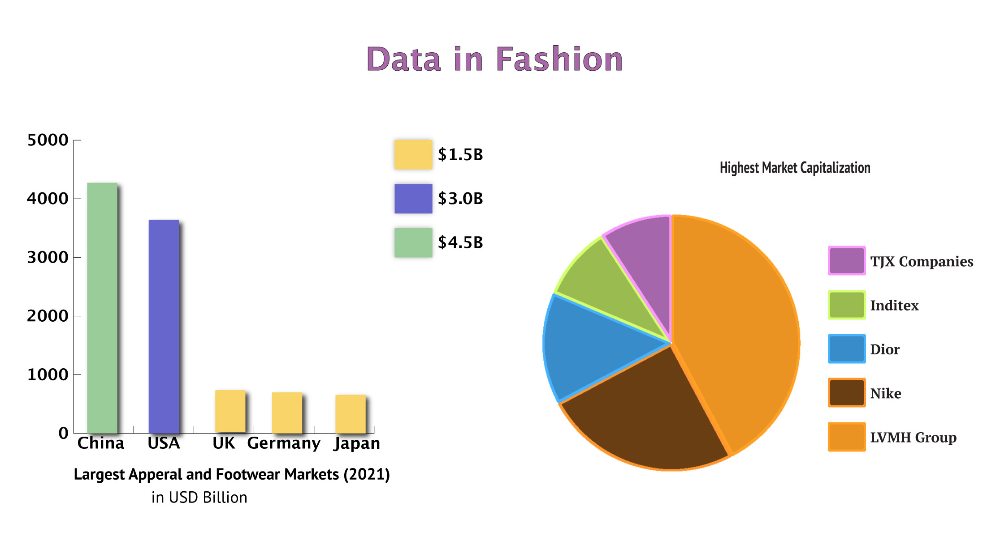

While creating these graphs I wanted to represent data you do not see often. I choose a publicly available data set to create these graphs. The data I picked out is information I found interesting and was surprised by the numbers I found. When designing the graph I chose bright colors to catch your attention and added some styling effects to make it more visually appealing. I didn’t want to use only a few different colors for my graphs since I felt it looked like graphs found in a math textbook. I decided to add a drop shadow and accented edges to hold the viewers attention for longer. I also chose pink for the title color to make it more fun.